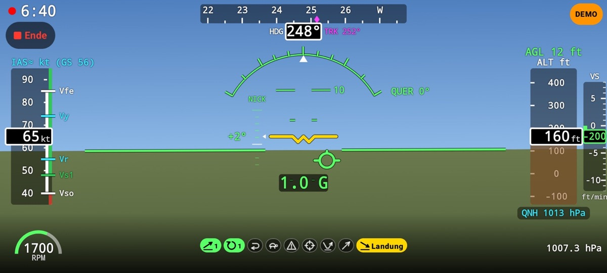
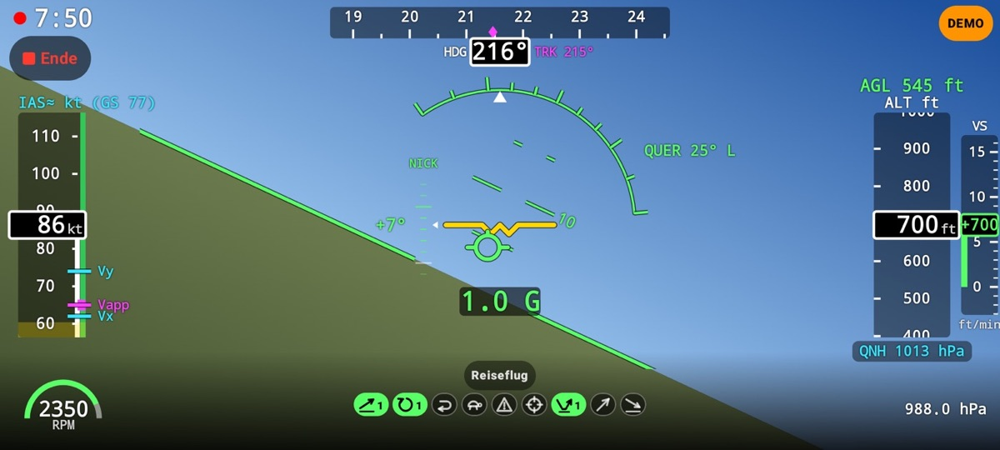
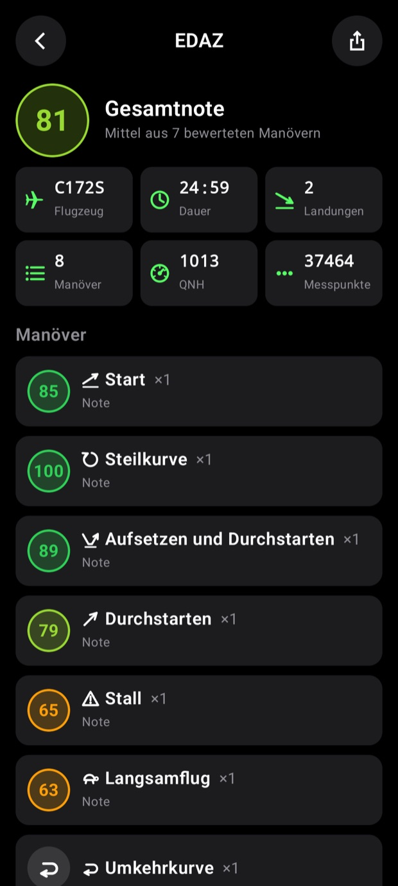
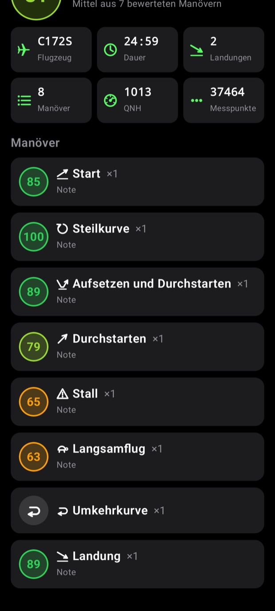
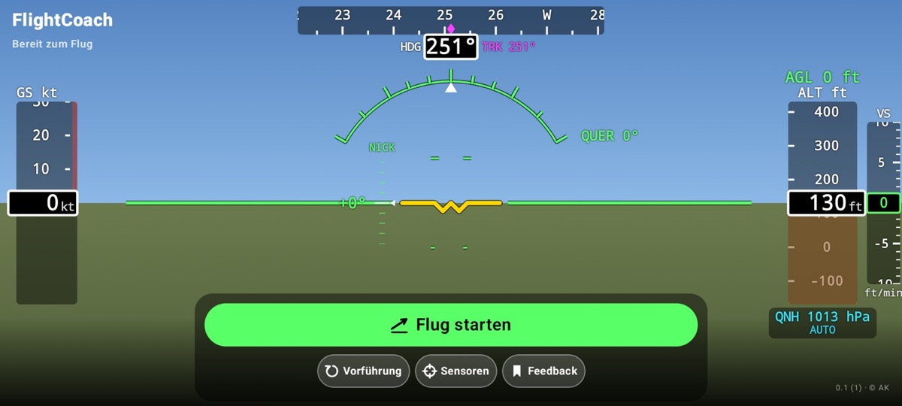

Testversion 0.2 (2) · Stand 27.11.2026 · English
FlightCoach filmt und bewertet Landungen, Starts und Manöver aus dem Cockpit einer Motormaschine. Auf dem iPhone gibt es die App schon; die Android-Fassung entsteht gerade. Ihr Rechenkern ist derselbe wie auf dem iPhone und liefert für dieselben Daten dieselben Ergebnisse.
Diese Testversion zeigt im Flug ein HUD wie auf dem iPhone (Fahrt, Höhe, Variometer, Lage, Kurs, Bahnvektor, Lastvielfaches), erkennt Starts, Landungen, Touch-and-go, Durchstarten, Steilkurven, Langsamflug und Stall und gibt nach dem Flug für jedes Manöver eine Note. Den Flug kannst du als GPX-Datei teilen. Kamerabild und Video kommen später. Gesucht sind Aufzeichnungen von möglichst vielen verschiedenen Telefonen.
APK herunterladen · 3,2 MBAndroid 10 oder neuer · Gyroskop und GPS nötig, Barometer empfohlen





Bilder aus der Vorführung (erfundener Flug an EDAZ). Im echten Flug steht dahinter noch kein Kamerabild, sondern Himmel und Boden.
Eine neue Testversion installierst du genauso, über die alte hinweg.
Hilfreich in der Mail: Telefonmodell, ob die angezeigte Fahrt zum Fahrtmesser bzw. Tacho passt, ob eine Rechtskurve nach rechts angezeigt wird („QUER … R“), und was nicht funktioniert hat. „Sensoren“ auf der Startseite zeigt die Rohwerte der Sensoren.
Die App braucht kein Konto und sendet nichts. Sie hat nicht einmal die Erlaubnis für den Internetzugang. Aufzeichnungen bleiben auf dem Telefon, bis du selbst eine GPX-Datei teilst. Was du per Mail schickst, dient nur dazu, die App zu verbessern. Verantwortlich: FlightCoach (Privatperson, Deutschland), info@skyvane.app.
Prüfsumme (SHA-256) der APK:6720a7c7300c3a75e4f5066ab9430144207d2a496e2e234c82a1c95f79a0ee34
FlightCoach records and scores landings, take-offs and manoeuvres from the cockpit of a light aircraft. The iPhone app exists; the Android version is in progress and shares the same calculation core. This early test build is a early test build: an iPhone-style HUD in flight, automatic detection of take-offs, landings, touch-and-goes, go-arounds, steep turns, slow flight and stalls, and a score for each manoeuvre after the flight. Camera and video come later. Tap Vorführung on the start screen to watch a demo flight.
Download the APK (Android 10+). Open the file, allow installing from your browser, and if Play Protect warns, choose More details → Install anyway. Allow precise location.
Mount the phone landscape with the rear camera facing forward, tap Flug starten, hold still and tap Eichen (calibrate mount), fly or drive with the screen on, then Ende and share the GPX from the summary. Please email the file with your phone model and any problems to info@skyvane.app. The app is German-only for now. Not a flight instrument. No account, nothing is sent unless you share it.
© AK
SkyVane · Apps für Himmel und Unterwegs · info@skyvane.app